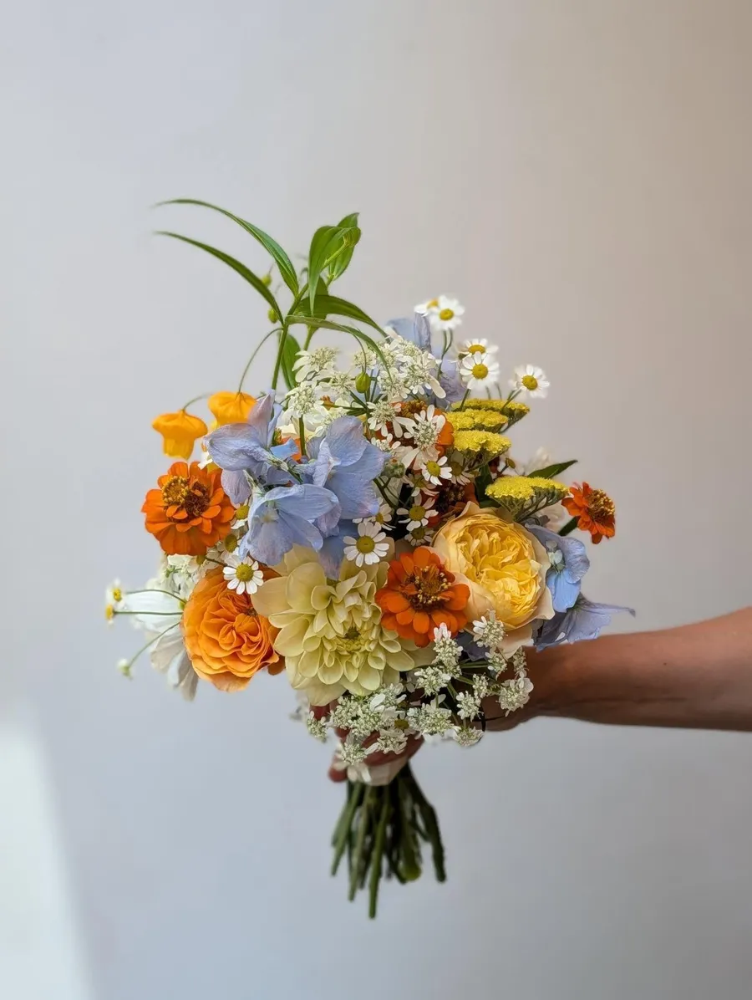
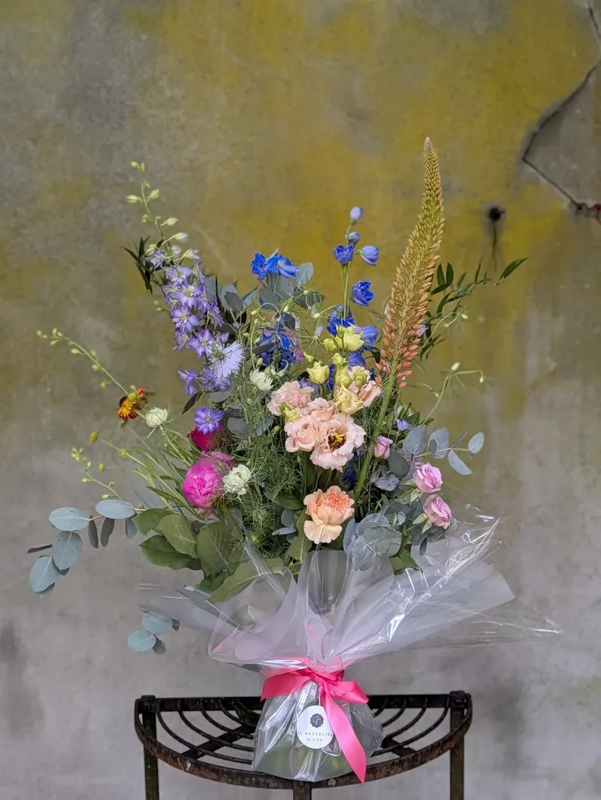
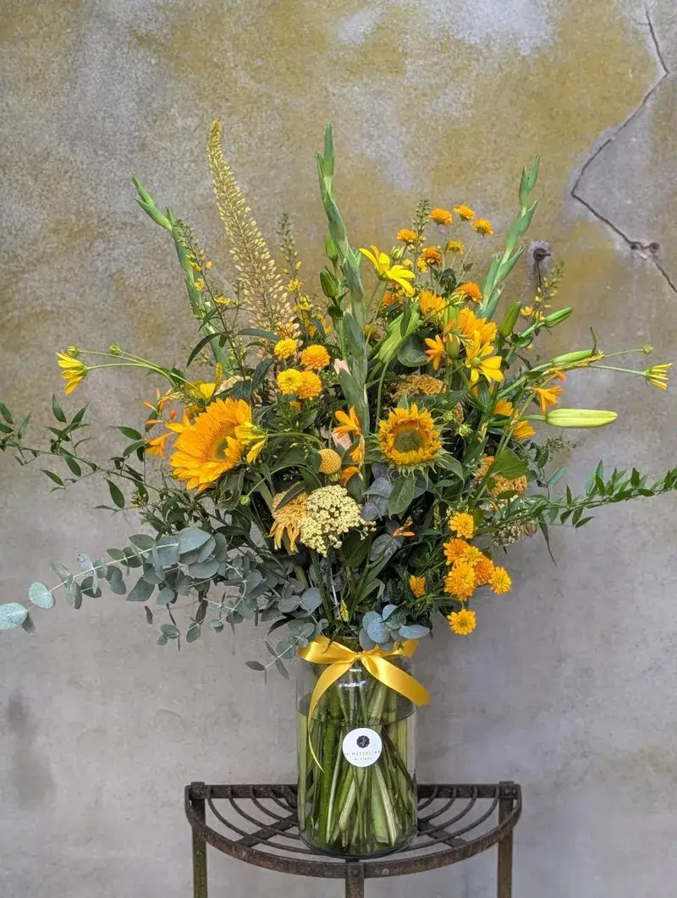
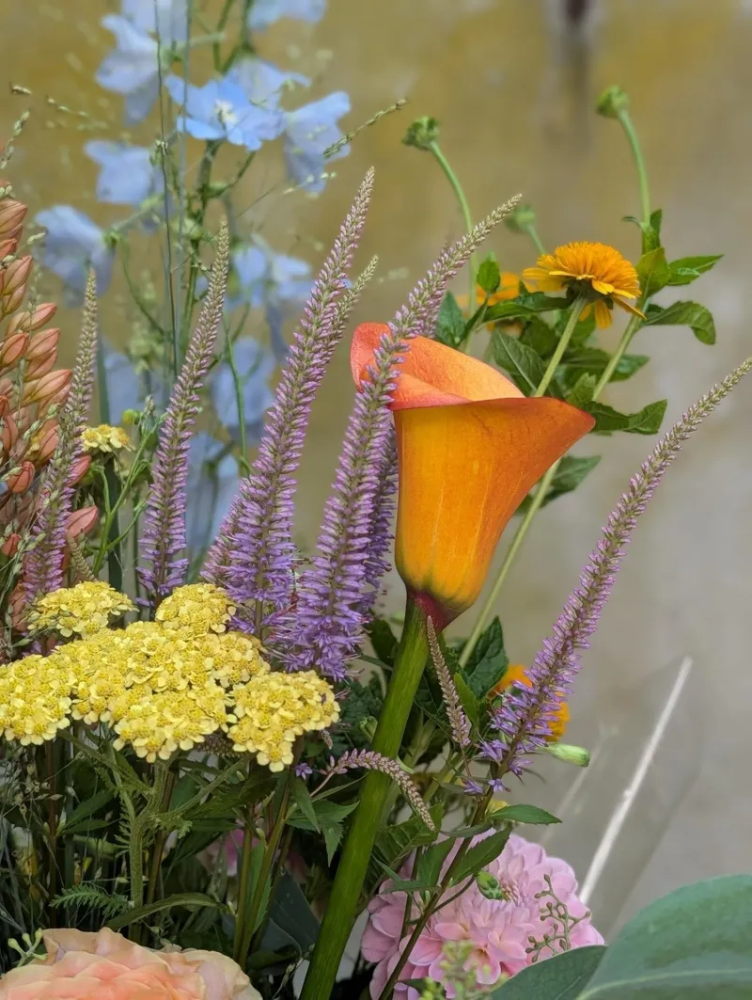
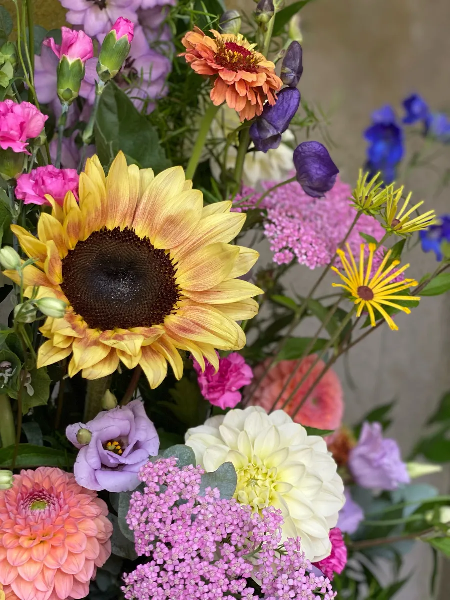
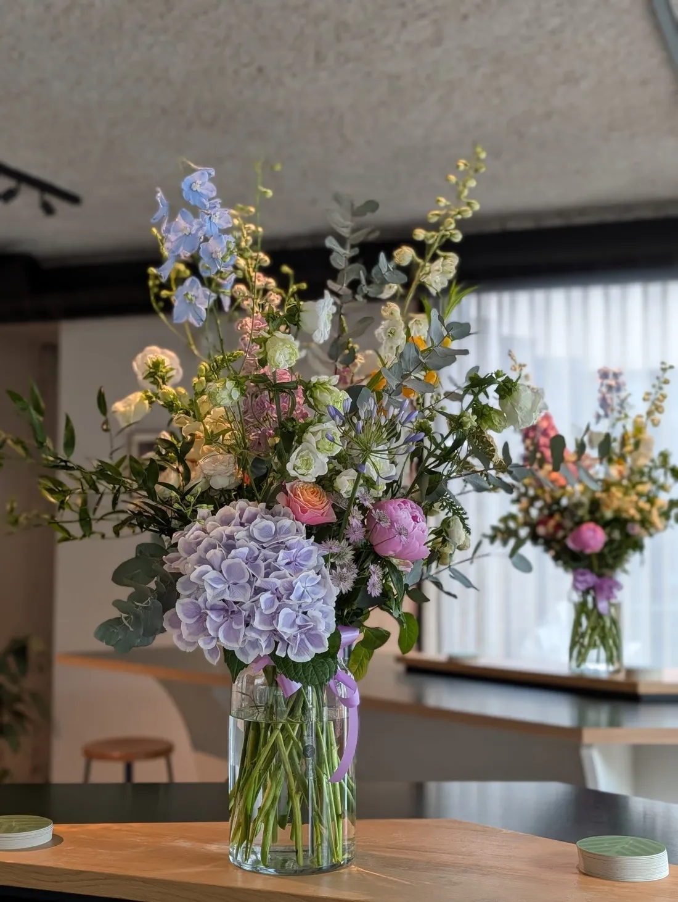

Stijl 1
Pluk boeket
Los, speels en een beetje wild, alsof je het zelf langs de kant van de weg plukte. Onze favoriet.

Lene maakt elk boeket met de hand, met wat het seizoen die week brengt. Voor je moeder, je trouwdag, je tafel, of gewoon voor jezelf op een dinsdag.
Veel boeketten krijgen eerst hun foto op het smeedijzeren tafeltje voor de oude kalkmuur. Zo zie je meteen hoe wild of hoe rustig het mag zijn.





Geen vaste prijslijst: jij zegt wat je wil uitgeven, wij maken er het mooiste boeket van dat we voor dat bedrag kunnen maken. Afhalen in de winkel of laten leveren.

Los, speels en een beetje wild, alsof je het zelf langs de kant van de weg plukte. Onze favoriet.

Compact en vol, mooi rond gebonden. Altijd goed voor een verjaardag of om iemand te bedanken.

Je geeft ons vrij spel. Lene kiest de mooiste bloemen van de dag en jij ziet het pas bij het afhalen.

In 2020 nam Lene Il Mazzolino Di Fiori over. Sindsdien maakt ze er boeketten met kleur en lef, kleedt ze trouwfeesten en zaken aan en zorgt ze ook voor het grafwerk. "De lach van gastvrouw Lene" staat zelfs in de reviews.
In de winkel staan vazen en potten van DES POTS en La Soufflerie. Bij een mooi boeket past altijd wel een vaas.
Een bruidsboeket, tafelboeketjes voor het feest of een stuk om iemand te eren: vertel ons wat je in gedachten hebt, dan wordt het helemaal zoals jij het voor ogen hebt.

Bruidsboeket en boeketjes voor op de tafels. Fijne trouwdag aan alle koppeltjes, en dank je wel voor het vertrouwen.
"Mijn trouwboeket hier gekocht. Lene heeft hier een prachtig exemplaar van gemaakt. Mijn bruid was héél tevreden!" Joris Lehaen

Liefdevolle creaties om troost te bieden en te eren. We kiezen bewust voor vrolijke, warme tinten: bloemen die troosten door hun kleur en licht.
"Top service, zeer vriendelijk en natuurlijk een prachtig boeket gemaakt ter eren van mijn grootouders diamanten bruiloft." Valerie Motmans
"Ik word elke keer opnieuw blij van mijn boeketten. Dit is echt zon plek die je spontaan aan vrienden wilt aanraden én graag deelt op Instagram, gewoon omdat alles er zo mooi en stijlvol uitziet."
"Voor onze trouw hebben we een bruidsboeket en boeketjes voor op de tafels besteld. Ze waren allemaal prachtig, gemaakt met betoverende verse bloemen. Het was helemaal zoals we het in gedachten hadden."
"Chapeau voor die service en toewijding! Mijn enige teleurstelling is dat ik maar 5 sterren kan geven, want dit is topklasse!"
Kom binnen, snuif even, en kies ter plaatse. Liever op voorhand bestellen kan altijd via mail of telefoon.
Ridder Portmansstraat 10
3500 Hasselt
011 26 29 65
info@ilmazzolino.be

Ik maakte deze demo voor jullie om te tonen wat er kan. Na een kort gesprek maak ik er iets veel persoonlijkers van, helemaal naar jullie wens.
Vrijblijvend. Ik kom langs of we bellen.
Op maat, op jullie eigen domein.
Geen voorschot. Jullie betalen pas als alles klaar is.
Hosting, domeinnaam en kleine wijzigingen, zoals nieuwe openingsuren.
Omdat een voorbeeld meer zegt dan een mail. Zo zien jullie meteen wat er kan, en het kost jullie niets.
Nee. Het gesprek is vrijblijvend. Vinden jullie het niks, dan is het daarmee gedaan.
Na ons gesprek staat jullie site binnen 10 tot 14 dagen online.
Zeker. Jullie domeinnaam kan gewoon blijven, de nieuwe site komt in de plaats van de oude.
Nee, dat doe ik op basis van ons gesprek. Eigen foto's zijn mooi meegenomen, maar niet nodig om te starten.